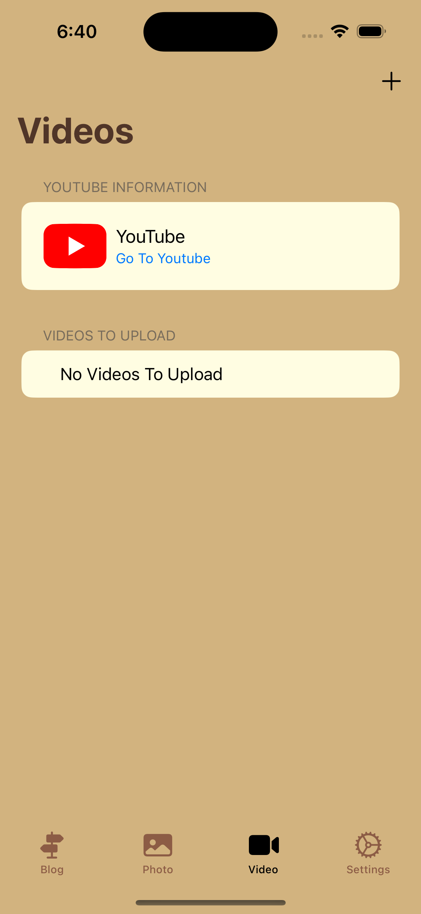

Trail Post Offline Editor is a free iOS app that allows you to write blog posts and share photos while on the trail without internet service. When you finally get access to the internet, upload your posts with a click of the button.
Trail Post will post to your Google Blogger blog including adding your location, your Apple health info like step count, etc.
Also, you can upload photos to a Google Photo album to share with friends.
This app is completely free and only optionally sends usage data to the developer to see how many people are using the app and to make it better.
No new account or passwords required and you can delete the app at any time and still have your blog and photos hosted with Google.